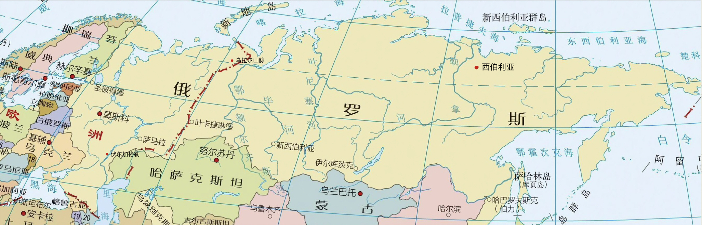
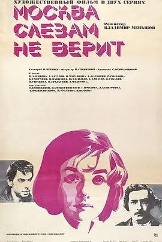
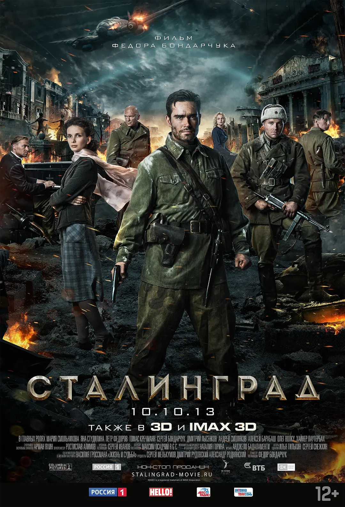
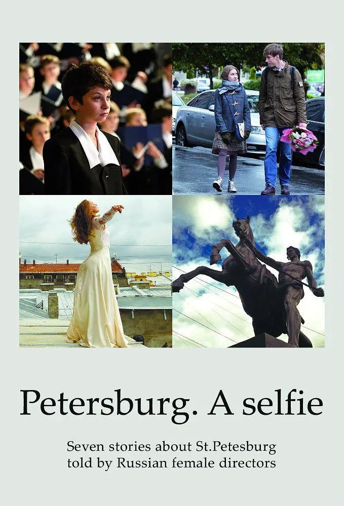
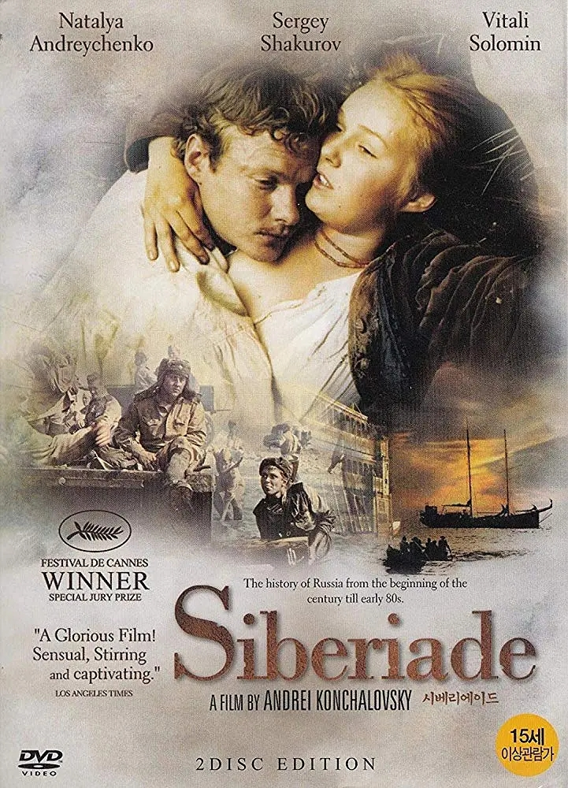
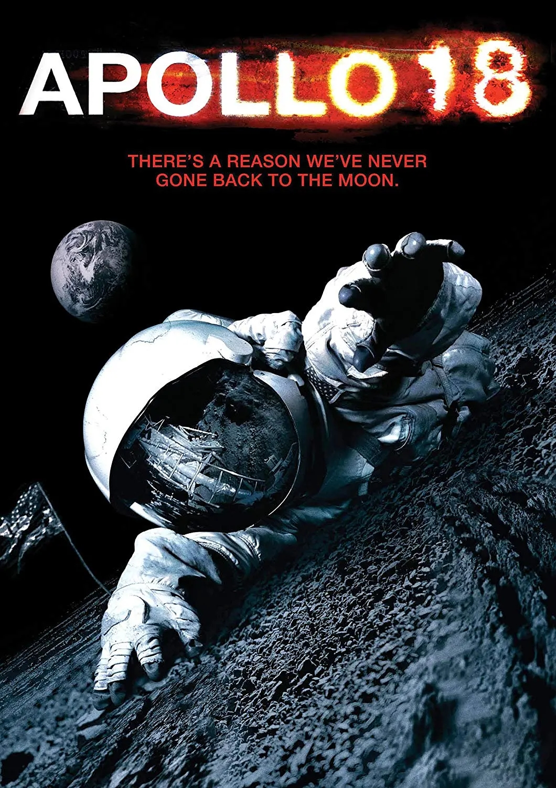

Back to top
十七岁的美丽少女卡捷琳娜（薇拉·阿莲托娃 Vera Alentova 饰）假扮成教授的女儿， 在一场宴会上邂逅了名为拉齐克夫（尤里·瓦西里耶夫 Yuri Vasilyev 饰）的摄影师，两人很快就双双坠入了情网之中。 然而，当卡捷琳娜的真实身份曝光之后，拉齐克夫残忍的抛弃了她，完全不顾她此时腹中已经怀上的骨肉。 坚强的卡捷琳娜并没有因此而一蹶不振，她决定将孩子生下来，独自抚养长大。一晃眼十六年过去，卡捷琳娜凭借着智慧和努力成为了工厂厂长。 某日，一位名叫果沙（阿勒克塞·巴塔洛夫 Aleksey Batalov 饰）让卡捷琳娜再度体会到了心动的感觉，谁知道，她的身份再一次成为了这段感情中的绊脚石。

Back to top
1942年秋天，人类史上最惨烈的一场战争在寒冷的土地上爆发。德国人穿越伏尔加河抵达对岸斯大林格勒设防固守， 苏联红军与对手展开城市争夺战，双方你来我往，城市化作废墟焦土，成千上万人死亡，放眼望去俨然人间地狱。在一次反攻行动中， 苏军严重伤亡，仅有大尉格罗莫夫（彼得·费奥多罗夫 Pyotr Fyodorov 饰）率领的侦察小队到达对岸，占领了一栋破烂的建筑。 他们在建筑内发现一名19岁少女卡嘉（玛丽亚·斯莫尔尼科娃 Mariya Smolnikova 饰）。卡嘉的父母早已死于战火，由于眷恋自由生长的城市和家园， 女孩固守此地，麻木穿梭战火之中。鉴于建筑的位置极其重要，极度厌战的德国军官彼得·卡恩（托马斯·克莱舒曼 Thomas Kretschmann 饰）奉命夺回该据点。 惨烈无情的修罗场，人性和兽性的角力永无休止……

Back to top
《圣彼得堡，我爱你》讲述了发生在一座真实且生机勃勃的城市里的七段故事，这些故事让你相信奇迹的存在。 这个城市的屋顶可供你跳舞，这个城市的铜像栩栩如生，城市的诗人约瑟夫·布罗茨基可以因拍摄以他为题的一部影片焕发新生。 每个短片故事都是关于爱与孤独，希望与好运的讲述。这是一场七位女性导演为涅瓦河上的城市——圣彼得堡献上的镜头盛宴。

Back to top
在西伯利亚的原始森林里，有一个叫叶兰的小村庄。村里的富户所罗门家族和穷人乌斯丘宁家是世仇。 1917年，风起云涌的革命从广大的城市波及到这密林深处的小村落。面对这场天翻地覆的革命，在西伯利亚这块土地上到底会发生什么？ 这两个家庭又将面临什么样的命运？

Back to top
上世纪60、70年代，美苏两大发达国家进行了一场震惊世界的军事竞赛。为了赢得未来星球大战的制空权，两国相继将宇航员送入外太空。 美国方面，在1972年以前先后发射了17艘宇航飞船前往月球，然而阿波罗18号却在飞行前夕被紧急叫停。根据最新解密的录像，本杰明·安德森（Warren Christie 饰）、 内森·沃克（Lloyd Owen 饰）和约翰·格雷（Ryan Robbins 饰）三名宇航员以采集样本的名义登上了阿波罗18号，于1974年飞赴月球，进行为期一周的考察。 本杰明和内森着陆月球，却接连发现奇怪的现象：不明身份者留下的脚印、惨死的苏联先行者以及各种奇怪的声音和若隐若现的生物。这不啻为一次无法回头的死亡之旅……